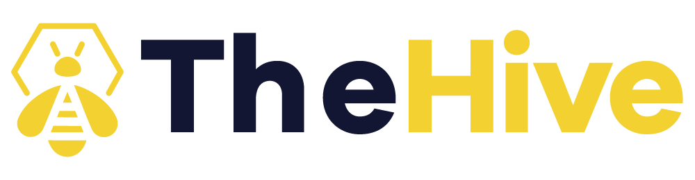

Incident brief
A distributed denial of service attack against IROrg. Read this before you start. It is the scenario, the evidence the SOC has gathered, and exactly what your team needs to produce.
Scenario
IROrg runs a Windows domain for internal services and a set of public facing services behind a perimeter firewall, including a web portal and authoritative DNS. A central SIEM aggregates firewall, netflow, DNS and endpoint logs, and endpoint protection runs on servers and workstations.
Over a short window IROrg's public web portal and DNS slow down and then become intermittently unreachable. The perimeter shows a large spike in inbound UDP traffic consistent with DNS amplification through open resolvers, saturating the uplink. At the same time the SOC finds an exposed Linux host in the DMZ that fetched small binaries for several CPU architectures and began beaconing outbound. The infrastructure matches a known DDoS as a service, the Gorilla family (GorillaBot, a Mirai variant), which points to both a volumetric attack on IROrg and one of its own hosts being recruited into the botnet.
What the SOC sees- The public web portal and authoritative DNS slow down, then become intermittently unreachable
- A large spike in inbound UDP traffic at the perimeter, consistent with DNS amplification using open resolvers
- Uplink saturation and firewall session table exhaustion
- A DMZ Linux host making outbound requests for small .nn binaries across several CPU architectures
- Endpoint protection on that host flags an ELF binary and a downloader shell script
- Outbound beaconing from that host to unfamiliar external infrastructure, suspected Gorilla C2
- SIEM correlation against threat intel feeds returning hits on several observed domains and IPs
- Infrastructure overlap with a known DDoS as a service, the Gorilla family, a Mirai variant
Event timeline · 24 September 2026 (UTC)
Indicators of compromise
Add these as observables in TheHive, record them in MISP under the right category, and enrich them in Cortex. This is a seed set to get you started, so verify, do not trust, and expect more once your MISP correlations light up.
Network indicators
| Type | Indicator | Role |
|---|---|---|
| URL | http://gorillabin.su/lol.sh | Loader script |
| URL | http://gorillabin.su/x86_64.nn | Payload download |
| URL | http://pen.gorillafirewall.su/lol.sh | Loader script |
| Domain | gorillabin.su | Payload distribution |
| Domain | gorillafirewall.su | Payload distribution / C2 |
| Domain | xn--girsdom-9ya.com | Payload distribution (IDN look alike) |
| IP | 94.156.65.232 | Payload host / C2 |
| IP | 91.194.55.151 | Payload host |
| IP | 94.156.177.68 | Payload host |
Files and hashes (SHA256)
| File | Role | SHA256 |
|---|---|---|
| GorillaBot payload | ELF, Mirai variant | d50acb9b20222c4e4a616a2ccc095eec2780141da7d4264a5ba2f82cae9c4670 |
| GorillaBot payload | ELF, second sample | 14fb8b3b89c5f626519950882f242dd53889b1067578a9321e721dbf4311a91f |
| Downloader script | Bash, fetches GorillaBot binaries | a9a56ecee25fb22a19757e98133aeb858312377f6fd9c2bbb747edf687ed8547 |
Affected assets
| Asset | Host / IP | Function | Impact observed |
|---|---|---|---|
| Web portal | web01.irorg.local | Public facing web service | Intermittent outage from uplink saturation |
| Authoritative DNS | dns01.irorg.local | Public DNS resolution | Degraded and abused in the amplification |
| Perimeter firewall | fw01.irorg.local | Network edge and filtering | UDP flood and session table exhaustion |
| DMZ Linux host | dmz-lnx01.irorg.local | Exposed application server | Recruited into the botnet, payload executed and beaconing |
The NIST incident handling phases
Record each phase as a case task in TheHive and provide a description of your actions in each based on your findings. Here is what each one means.
Confirm the security incident and summarise your view using the incident detection details already provided in the brief.
Investigate and analyse the incident details to understand what happened, its scope, and its impact. Run analysis and summarise your analysis findings in MISP and Cortex here
Limit the incident to prevent further spread or damage.
Remove the threat and fix the vulnerabilities that allowed it to occur.
Restore affected systems and services to normal operation and monitor for any recurrence.
Review what happened, capture lessons learned, and improve future incident response.
Your objective
Respond as IROrg’s internal incident response team using the four tools, following the NIST incident handling phases and recording each phase as a case task in TheHive. The response actions are yours to decide and the incident details are provided above.
- Coordinate with your team in Mattermost.
- Create a case in TheHive with an appropriate title.
- Add six case tasks named after the NIST phases and document your response actions in each.
- Add the provided indicators as observables, plus any artifacts you extract.
- Record the IoCs in MISP and correlate any new ones you find.
- Analyse observables in Cortex (VirusTotal, AbuseIPDB, and others).
- When every task is done, close and resolve the case in TheHive.
What to produce

- A case with an appropriate title.
- Six case tasks, each titled after a NIST phase, each with a short summary of what your team did.
- Interesting indicators added as observables, plus any extra artifacts you extract.
- The case closed and resolved once every task and other tool(MISP, Cortex, Mattermost) activities is complete.
- An event with an appropriate title.
- Interesting observable/IoC recorded as an attribute.
- Review related events that appear in MISP after you add an attribute to your security event
- A short summary of key findings added to the analysis case task in TheHive.
- Interesting observable analysed with relevant cortex analysers such as VirusTotal or AbuseIPDB.
- A short summary of key findings added to the analysis case task in TheHive.
- Discussion in your team channel from start to end of incident